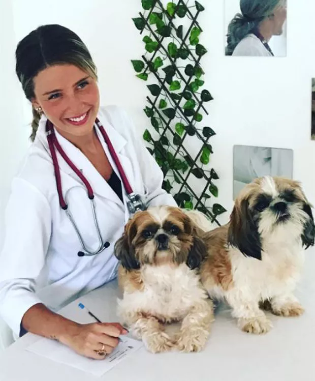
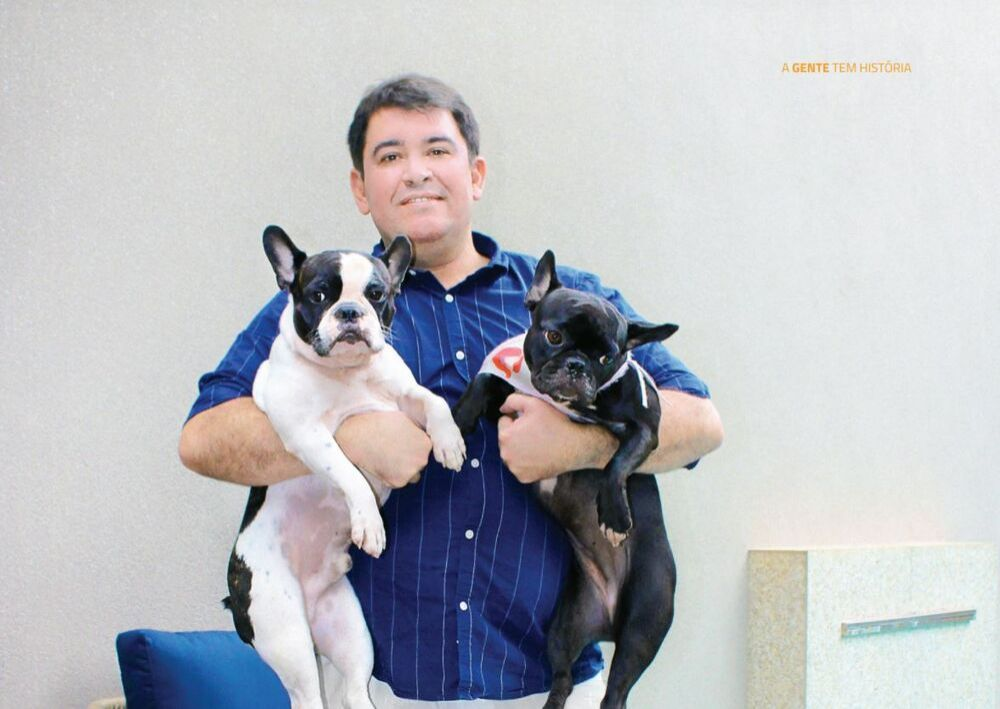

Casada com o também veterinário Leandro Amieiro, e ex-atriz mirim decidiu cursar a faculdade movida pelo se amor pelos animais. Formada desde 2013, ela já trabalhou veterinária responsável dos animais em cena de novelas da TV Globo. Ela era a responsávels por cuidar dos animais das novelas Êta Mundo Bom! e Velho Chico, em 2016. Além disto, alguns animais de Debby, foram alugados pela Rede Globo, como alguns de seus cachorros na produção da novela Velho Chico e a porquinha Lili, que fez sucesso com a personagem Mafalda (Camila Queiroz) em Êta Mundo Bom!.

-Dr. Fábio dos Santos Nogueira:
-Dr. Fábio dos Santos Nogueira possui uma carreira prestigiosa e premiada, mestre e doutor pela UNESP Botucatu- SP, atualmente ele é coordenador do Curso de Medicina Veterinária da FEA, pesquisador – atua na busca de novos fármacos e vacinas para Leishmaniose; é sócio Fundador do BRASILEISH - Grupo de estudos em Leishmaniose e sócio proprietário do Hospital Veterinário Mundo Animal. Formou-se em Medicina Veterinária pelo Centro Regional Universitário de Espírito Santo do Pinhal no ano de 1993, e em 2000, retornou a Andradina para trazer todas as especialidades e melhorar o atendimento e o diagnóstico dos animais da região.
